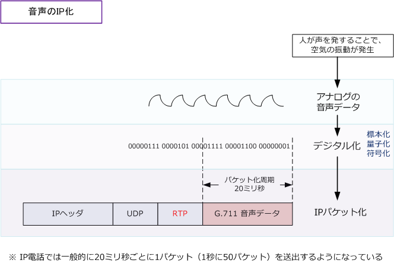
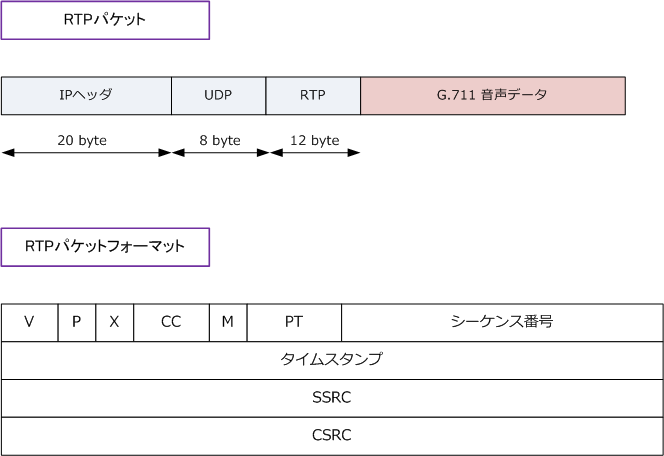

IP Telephony - RTP
デジタル化 → IPパケット化
前回の解説でアナログ信号である音声をデジタル化しましたが、IP電話ではこのデジタルデータをもとにし RTPパケットを構成（音声をIPパケット化）して、IPネットワークに音声を送出していくことになります。 なお、遅延防止のために一般的に音声をパケットに変換する周期を20～60ミリ秒に固定します。パケット化 周期を長くすれば転送効率が良くなりますが、その分遅延が大きくなってしまうため、この値が適正値です。

RTP（Real-time Transport Protocol）
アナログの音声からデジタル化されたデータをIPで送信するためには、RTPというプロトコルを使用します。 RTPは音声や映像をストリーミング再生するためのUDP上で動作するプロトコルです。フォーマットは以下。

| 項目 | ビット数 | 説明 |
|---|---|---|
| V （Version Number） | 2 | RTPのバージョン。現在のバージョンは2。 |
| P（Padding） | 1 | 最後にパディングがある場合に示すフィールド。 |
| X（eXtension） | 1 | 拡張ヘッダを利用する場合に示すフィールド。 |
| CC（CSRC Count） | 4 | CRSC識別子の数を示すフィールド。 |
| M（Marker） | 1 | 重要なイベントにマークを示すフィールド。 |
| PT（Payload Type） | 7 | ペイロードタイプを示すフィールド。 |
| シーケンス番号 | 16 | シーケンス番号を示すフィールド。 |
| タイムスタンプ | 32 | タイムスタンプを示すフィールド。 |
| SSRC（Synchrozination Source) | 32 | 送信元を識別するためのフィールド。 |
| CSRC（Contributing Source） | 可変 | ストリームの送信元を識別するためのフィールド。 |
RTPでは、IP電話機が送信した音声データを正しく伝達するために、受信側ではシーケンス番号によって パケットを正しい順番に並び替えます。また、標本化された瞬間のタイムスタンプを記述することにより 受信側ではそのタイムスタンプ情報で音声再生のタイミングを決定することで音声通話を実現しています。
通常、RTPとセットでRTCP（Real-time Transport Control Protocol）というプロトコルが使用されます。 RTCPでは、送出パケット数、受信パケット数、遅延時間、パケット損失率などの通信状況を伝えています。
1通話あたりの必要帯域
1通話あたりの必要帯域（Kbps）は（音声データサイズ＋各ヘッダサイズ）×8×pps により求められます。 従ってG.711では(160+58)×8×50pps = 87.2Kbpsであると分かります。パケット化周期20ミリ秒が前提。
| コーデック情報 | 帯域幅の計算値 | ||||||
|---|---|---|---|---|---|---|---|
| Codec bps | サンプルサイズ | サンプル間隔 | MOS | ボイスペイロード | ボイスペイロード | PPS | 帯域幅 |
| G.711 (64kbps) | 80byte | 10ミリ秒 | 4.1 | 160byte | 20ミリ秒 | 50pps | 87.2 Kbps |
| G.729 (8kbps） | 10byte | 10ミリ秒 | 3.92 | 20byte | 20ミリ秒 | 50pps | 31.2 Kbps |
※ 58byteの内訳 （ イーサネットヘッダ 18byte、IPヘッダ 20byte、UDPヘッダ 8byte、RTPヘッダ12byte ) ※ MOSはボイス品質の評価体系。多種多様な聞き手が 1（悪い）から 5（非常によい）の尺度でボイスサンプルの品質を判断。
上記の通り1通話あたり厳密にはG.711なら87.2Kbps、G.729なら31.2Kbpsが最低必要帯域となりますが、 一般的には、ネットワークシステムとして余裕のない帯域設計を行うべきではない、という観点からすると 1通話あたりG.711なら100Kbps、G.729なら40Kbpsとして最低必要帯域を計算することが望ましいです。